How should future neural reasoning systems implement extended computation? Recursive Reasoning Models (RRMs) offer a promising alternative to autoregressive sequence extension by performing iterative latent-state refinement with shared transition functions. Yet existing RRMs are largely deterministic, following a single latent trajectory and converging to a single prediction. We introduce Generative Recursive reAsoning Models (GRAM), a framework that turns recursive latent reasoning into probabilistic multi-trajectory computation. GRAM models reasoning as a stochastic latent trajectory, enabling multiple hypotheses, alternative solution strategies, and inference-time scaling through both recursive depth and parallel trajectory sampling. This yields a latent-variable generative model supporting conditional reasoning via p(y|x) and, with fixed or absent inputs, unconditional generation via p(x). Trained with amortized variational inference, GRAM improves over deterministic recurrent and recursive baselines on structured reasoning and multi-solution constraint satisfaction tasks, while demonstrating an unconditional generation capability.
Existing RRMs are fundamentally deterministic: given the same input and initialization, they follow a single latent trajectory and converge to a single prediction. A capable reasoning system should be not only deep (repeated refinement) but also wide (multiple parallel trajectories). GRAM treats the reasoning process itself as a stochastic latent trajectory: at each recursion step, the model samples a transition conditioned on the input and the current reasoning state, rather than deterministically updating to a single next state.
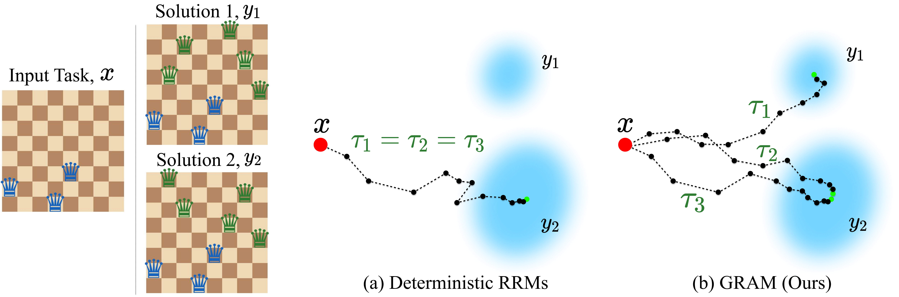
Deterministic vs. probabilistic recursive reasoning. (a) Prior RRMs are deterministic — all runs collapse to an identical trajectory, converging to a single solution. (b) GRAM explores diverse trajectories that reach multiple valid solutions, naturally enabling parallel inference-time scaling.
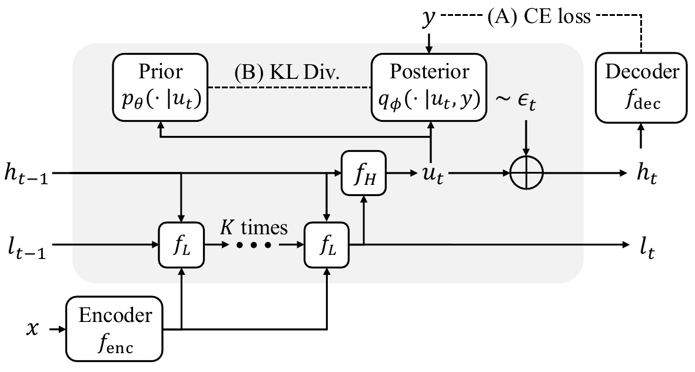
GRAM architecture. A single stochastic latent transition. After K low-level refinements via fL, the high-level update fH produces a deterministic proposal ut, to which learnable stochastic guidance εt is added: ht = ut + εt. The mean encodes a state-dependent direction; the variance controls the amount of exploration.
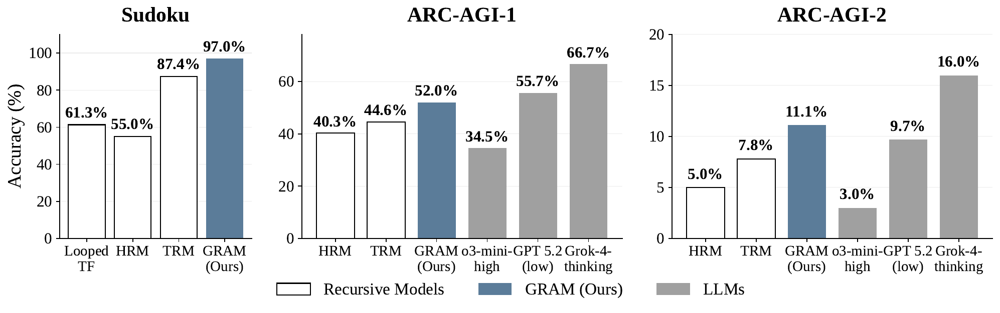
On both Sudoku-Extreme and ARC-AGI, GRAM consistently outperforms all deterministic recursive baselines (Looped TF, HRM, TRM), demonstrating that stochastic latent transitions yield substantial gains within the recursive-reasoning paradigm.
Stochastic guidance improves reasoning. While Looped TF, HRM, and TRM are restricted to learning from a single deterministic path, GRAM leverages stochastic transitions to explore diverse reasoning trajectories. By training on this richer distribution of solution paths, GRAM acquires more robust reasoning capabilities, allowing it to navigate complex problem spaces more effectively than models constrained to a single sequential refinement process.
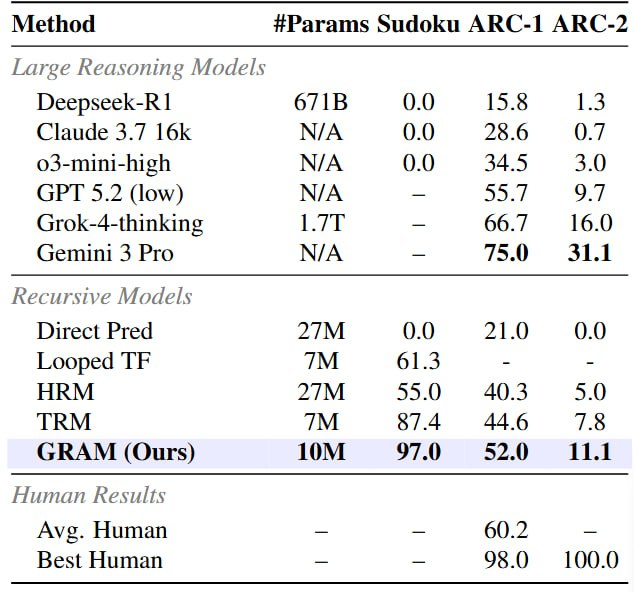
Parallel sampling provides a new test-time scaling axis. GRAM supports two complementary axes of inference-time scaling: depth, by varying the number of recursive transitions, and width, by sampling multiple latent reasoning trajectories in parallel. To select the best trajectory, we employ a Latent Process Reward Model (LPRM) that predicts output correctness from the latent state.
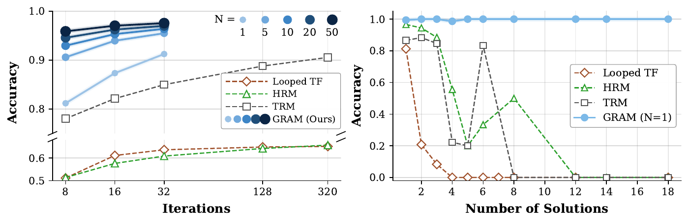
(Left) GRAM with N=20 samples at 16 iterations significantly outperforms TRM at 320 iterations (97.0% vs 90.5%), despite comparable computational budget. (Right) Deterministic recursive models suffer sharp accuracy drops as the number of valid solutions increases, whereas GRAM maintains consistent performance.
Deterministic recursion fails on multi-solution tasks. Deterministic recursive models structurally cannot capture multiple solutions, with coverage at most 36.1% across all tasks. As the number of valid solutions increases, all three deterministic baselines exhibit sharp accuracy degradation, confirming that deterministic latent updates cause mode collapse when multiple valid outputs exist for the same input.
Recursive refinement yields sharper constraint satisfaction. While generative models (AR, MDLM) achieve high coverage, GRAM consistently attains higher accuracy with comparable diversity. On N-Queens, GRAM reaches 99.7% accuracy versus 96.3% (AR) and 96.1% (MDLM). The gap is more pronounced on Graph Coloring, where GRAM reduces conflict edges to 2.7 and 3.3 on 8- and 10-vertex tasks, compared to 19.0 and 61.3 for AR. This demonstrates that recursive refinement enables stricter constraint satisfaction than generative sampling alone.
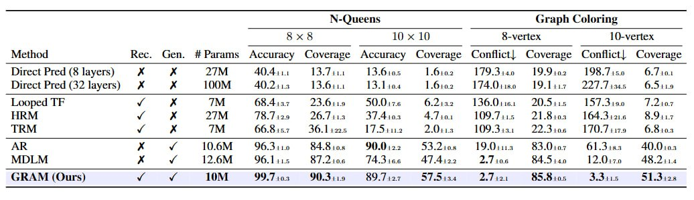
We visualize latent trajectories during recursive computation on Sudoku by projecting the high-level state into 2D via PCA. TRM follows a single deterministic path with no mechanism to escape suboptimal regions. GRAM samples diverse trajectories that explore different regions of latent space — while some become trapped in local minima, others successfully navigate toward the global optimum, enabling reliable solution discovery through parallel exploration.
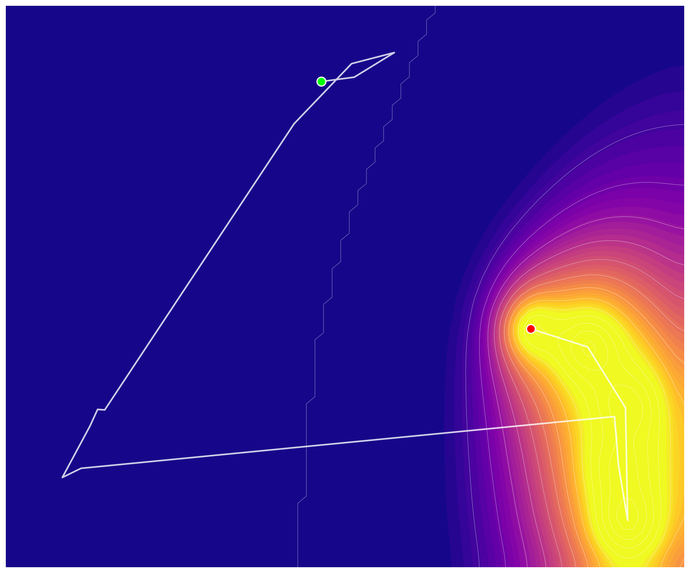
TRM: Single deterministic path.
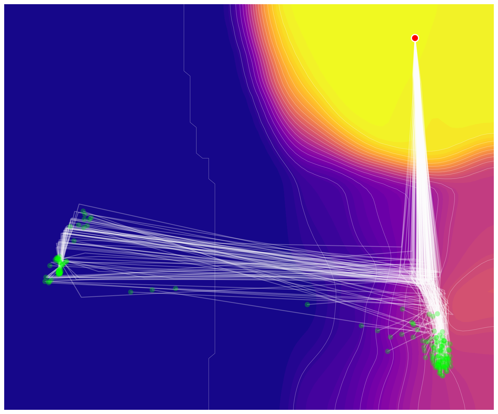
GRAM (50 samples): Diverse stochastic trajectories.
GRAM extends from conditional reasoning to unconditional generation. By replacing the input with an empty conditioning signal, the same recursive process defines an unconditional generative model p(x).
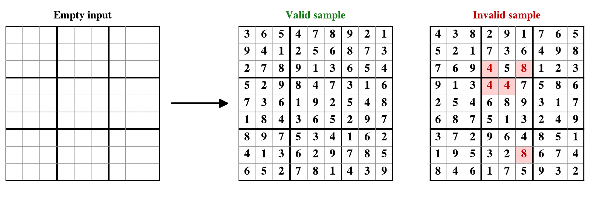
Generative behavior beyond reasoning. GRAM produces valid boards with 99.05% validity using 10.9M parameters and 16 supervision steps, surpassing D3PM baselines that use up to 55.1M parameters and 1000 denoising steps. Constraint satisfaction emerges as a natural byproduct of the recursive generative process.
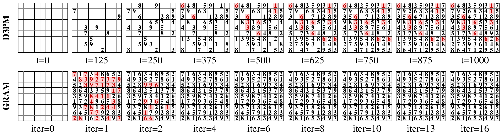
Qualitative examples of unconditional Sudoku generation by GRAM. Each board is generated from an empty grid. GRAM produces complete boards that satisfy all row, column, and box constraints.
| Method | #Params | Steps | Validity (%) |
|---|---|---|---|
| D3PM-Uniform (Big) | 55.1M | 1000 | 91.33 |
| D3PM-Uniform (Small) | 15.9M | 1000 | 29.24 |
| D3PM-Absorb (Big) | 55.1M | 1000 | 79.18 |
| D3PM-Absorb (Small) | 15.9M | 1000 | 21.88 |
| GRAM (Ours) | 10.9M | 16 | 99.05 |
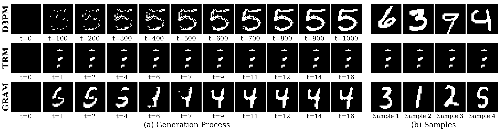
Visualization of the generation process and samples. GRAM progressively refines the generated image through recursive latent updates, correcting initial errors.
The deterministic baseline TRM exhibits mode collapse (FID 303.29), whereas GRAM produces recognizable digits with IS and FID comparable to D3PM. Inference-time scaling transfers to generation: increasing recursion at inference improves quality monotonically (IS 1.85 → 2.04, FID 84.08 → 73.34 from 8 to 256 steps), even though training uses only 16 steps. This indicates that the iterative-refinement advantage of recursive models carries over into the generative regime.
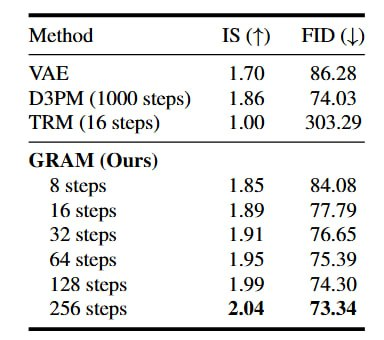
Stochastic guidance provides consistent gains across architectures. SG improves performance regardless of the underlying architecture: SG alone lifts the flat Looped TF baseline, and combining SG with deep supervision already reaches 100% on N-Queens. While the effect of hierarchical recursion is task-dependent, SG yields consistent gains in every configuration.
Both stochasticity and guidance are essential. Removing guidance maintains Sudoku performance but collapses on N-Queens (50.27%), where structured guidance is necessary to navigate multi-solution spaces. Removing stochasticity fails completely (0.0% on both tasks). Naive stochasticity (stochastic decoder, random init) does not help TRM, demonstrating that GRAM's gains stem from the variational framework rather than mere randomness.
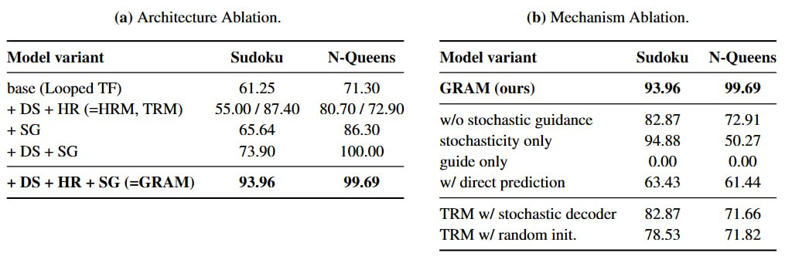
@article{baek2025gram,
title={Generative Recursive Reasoning},
author={Junyeob Baek and Mingyu Jo and Minsu Kim and Mengye Ren and Yoshua Bengio and Sungjin Ahn},
year={2025}
}